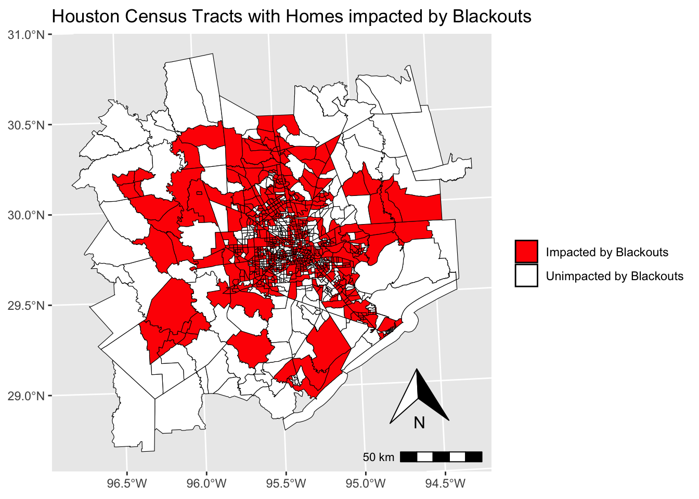
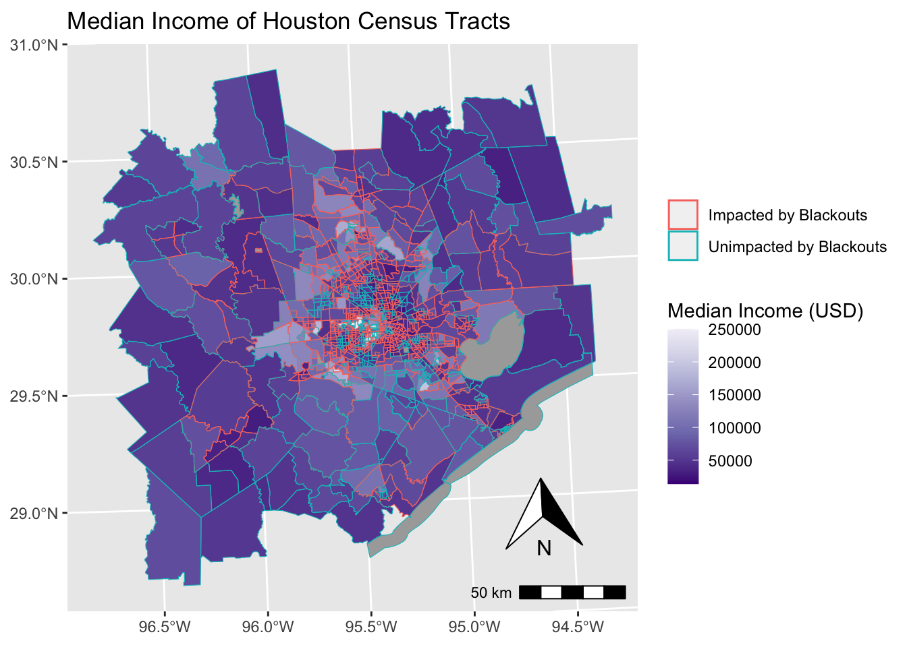
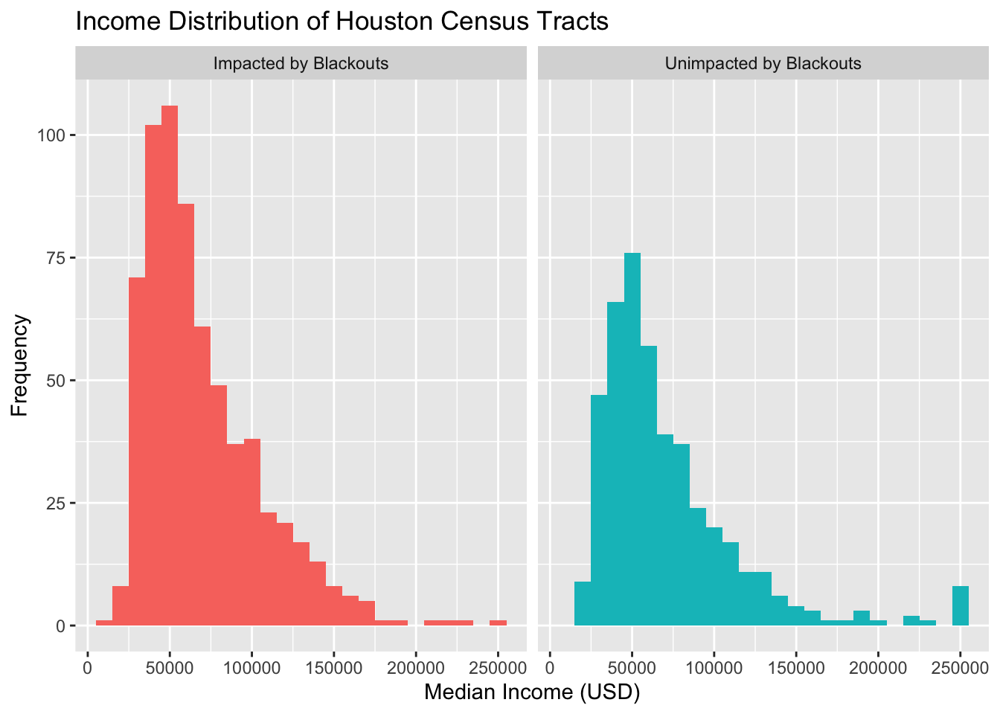

# general libraries
library(here)
library(tidyverse)
# geospatial libraries
library(sf)
library(stars)
library(raster)
library(ggspatial)Link to GitHub Repository
Context
This project was completed for my Geospatial Analysis & Remote Sensing class, taken as part of my Master’s program at UC Santa Barbara. Provided with data and questions, I carried out this analysis using appropriate geospatial modeling techniques.
Question
During the 2021 Houston Power Crisis, in which census tracts did residential blackouts occur, and how did this relate to a census tract’s median income?
Analysis Summary
Used data from NASA’s VIIRS instrument to conduct a spatial analysis of the 2021 Houston Power Crisis. Determined and visualized census tracts in the Houston metropolitan area where residential blackouts occurred and analyzed how this related to median income of census tracts.
Introduction
In February 2021, Texas faced an unprecedented power crisis that left millions without electricity as a result of three winter storms (Ramsey, 2021). Struggling to meet the extraordinary demand for heating amid freezing temperatures, the Electric Reliability Council of Texas (ERCOT) implemented widespread blackouts to prevent a total grid collapse. In addition to exposing the vulnerabilities of Texas’s energy infrastructure, the crisis also prompted a nationwide discussion on the resilience of power grids in the face of extreme weather events.
Setup
Data
Blackout TIF files
Data on blackouts comes from NASA’s Visible Infrared Imaging Radiometer Suite (VIIRS) instrument and were accessed from NASA’s website (NASA, n.d.). We will look at 2021-02-07 and 2021-02-16, as two days provide us with contrasting images to visualize the extent of the power outage in Texas. Houston lies on the border of two tiles (h08v06 and h08v05) that are measured by the VIIRS instrument, so we will download two tiles per date.
# Read in and combine night lights data
## Loading 02/07/2021 tiles as stars objects
h08v05_lights1 <- read_stars(here("data", "2024-1-20-post-data", "VNP46A1", "VNP46A1.A2021038.h08v05.001.2021039064328.tif"))
h08v06_lights1 <- read_stars(here("data", "2024-1-20-post-data", "VNP46A1", "VNP46A1.A2021038.h08v06.001.2021039064329.tif"))
## Loading 02/16/2021 tiles as stars objects
h08v05_lights2 <- read_stars(here("data", "2024-1-20-post-data", "VNP46A1", "VNP46A1.A2021047.h08v05.001.2021048091106.tif"))
h08v06_lights2 <- read_stars(here("data", "2024-1-20-post-data", "VNP46A1", "VNP46A1.A2021047.h08v06.001.2021048091105.tif"))
## Combining tiles for each day
lights1 <- st_mosaic(c(h08v05_lights1, h08v06_lights1, along = "y"))
lights2 <- st_mosaic(c(h08v05_lights2, h08v06_lights2, along = "y"))# Check that tiles for day 1 were successfully combined
## For x, value in "to" column should be the same in all three outputs
## For y, value in "to" column of first output df should be sum of "to" values in second and third outputs)
st_dimensions(lights1) from to offset delta refsys x/y
x 1 2400 -100 0.004167 WGS 84 [x]
y 1 4800 40 -0.004167 WGS 84 [y]st_dimensions(h08v05_lights1) from to offset delta refsys point x/y
x 1 2400 -100 0.004167 WGS 84 FALSE [x]
y 1 2400 40 -0.004167 WGS 84 FALSE [y]st_dimensions(h08v06_lights1) from to offset delta refsys point x/y
x 1 2400 -100 0.004167 WGS 84 FALSE [x]
y 1 2400 30 -0.004167 WGS 84 FALSE [y]# Check that tiles for day 2 were successfully combined
## For x, value in "to" column should be the same in all three outputs
## For y, value in "to" column of first output df should be sum of "to" values in second and third outputs)
st_dimensions(lights2) from to offset delta refsys x/y
x 1 2400 -100 0.004167 WGS 84 [x]
y 1 4800 40 -0.004167 WGS 84 [y]st_dimensions(h08v05_lights2) from to offset delta refsys point x/y
x 1 2400 -100 0.004167 WGS 84 FALSE [x]
y 1 2400 40 -0.004167 WGS 84 FALSE [y]st_dimensions(h08v06_lights2) from to offset delta refsys point x/y
x 1 2400 -100 0.004167 WGS 84 FALSE [x]
y 1 2400 30 -0.004167 WGS 84 FALSE [y]Highway locations GeoPackage
Typically highways account for a large portion of the night lights observable from space. To minimize falsely identifying areas with reduced traffic as areas without power, we will ignore areas near highways. We used Geofabrik to retrieve a shapefile of all highways in Texas and prepared a GeoPackage containing just the subset of roads that intersect the Houston metropolitan area (Geofabrik, 2022).
# Read in highways data and reproject CRS
## Defining SQL query
query <- "SELECT * FROM gis_osm_roads_free_1 WHERE fclass='motorway'"
## Loading highways data and storing as sf object
highways <- st_read(here("data", "2024-1-20-post-data", "gis_osm_roads_free_1.gpkg"), query = query) %>%
st_make_valid()Reading query `SELECT * FROM gis_osm_roads_free_1 WHERE fclass='motorway''
from data source `/Users/linusghanadan/Documents/MEDS/other/linusghanadan.github.io/data/2024-1-20-post-data/gis_osm_roads_free_1.gpkg'
using driver `GPKG'
Simple feature collection with 6085 features and 10 fields
Geometry type: LINESTRING
Dimension: XY
Bounding box: xmin: -96.50429 ymin: 29.00174 xmax: -94.39619 ymax: 30.50886
Geodetic CRS: WGS 84## Reprojecting CRS of to EPSG:3083
highways <- st_transform(highways, crs = st_crs(3083))
## Checking that CRS was changed (should print CRS 3083 at bottom of output)
crs(highways)[1] "PROJCRS[\"NAD83 / Texas Centric Albers Equal Area\",\n BASEGEOGCRS[\"NAD83\",\n DATUM[\"North American Datum 1983\",\n ELLIPSOID[\"GRS 1980\",6378137,298.257222101,\n LENGTHUNIT[\"metre\",1]]],\n PRIMEM[\"Greenwich\",0,\n ANGLEUNIT[\"degree\",0.0174532925199433]],\n ID[\"EPSG\",4269]],\n CONVERSION[\"Texas Centric Albers Equal Area\",\n METHOD[\"Albers Equal Area\",\n ID[\"EPSG\",9822]],\n PARAMETER[\"Latitude of false origin\",18,\n ANGLEUNIT[\"degree\",0.0174532925199433],\n ID[\"EPSG\",8821]],\n PARAMETER[\"Longitude of false origin\",-100,\n ANGLEUNIT[\"degree\",0.0174532925199433],\n ID[\"EPSG\",8822]],\n PARAMETER[\"Latitude of 1st standard parallel\",27.5,\n ANGLEUNIT[\"degree\",0.0174532925199433],\n ID[\"EPSG\",8823]],\n PARAMETER[\"Latitude of 2nd standard parallel\",35,\n ANGLEUNIT[\"degree\",0.0174532925199433],\n ID[\"EPSG\",8824]],\n PARAMETER[\"Easting at false origin\",1500000,\n LENGTHUNIT[\"metre\",1],\n ID[\"EPSG\",8826]],\n PARAMETER[\"Northing at false origin\",6000000,\n LENGTHUNIT[\"metre\",1],\n ID[\"EPSG\",8827]]],\n CS[Cartesian,2],\n AXIS[\"easting (X)\",east,\n ORDER[1],\n LENGTHUNIT[\"metre\",1]],\n AXIS[\"northing (Y)\",north,\n ORDER[2],\n LENGTHUNIT[\"metre\",1]],\n USAGE[\n SCOPE[\"State-wide spatial data presentation requiring true area measurements.\"],\n AREA[\"United States (USA) - Texas.\"],\n BBOX[25.83,-106.66,36.5,-93.5]],\n ID[\"EPSG\",3083]]"House locations GeoPackage
For data on houses in Houston, we again downloaded from Geofabrick and prepared a GeoPackage containing only houses in the Houston metropolitan area (Geofabrik, 2022).
# Read in homes data and reproject CRS
## Defining query
query <- "SELECT * FROM gis_osm_buildings_a_free_1 WHERE (type is NULL AND name is NULL) OR type in ('residential', 'apartments', 'house', 'static_caravan', 'detached')"
## Loading buildings data and storing as sf object
homes <- st_read(here("data", "2024-1-20-post-data", "gis_osm_buildings_a_free_1.gpkg"), query = query) %>%
st_make_valid()Reading query `SELECT * FROM gis_osm_buildings_a_free_1 WHERE (type is NULL AND name is NULL) OR type in ('residential', 'apartments', 'house', 'static_caravan', 'detached')'
from data source `/Users/linusghanadan/Documents/MEDS/other/linusghanadan.github.io/data/2024-1-20-post-data/gis_osm_buildings_a_free_1.gpkg'
using driver `GPKG'
Simple feature collection with 475941 features and 5 fields
Geometry type: MULTIPOLYGON
Dimension: XY
Bounding box: xmin: -96.50055 ymin: 29.00344 xmax: -94.53285 ymax: 30.50393
Geodetic CRS: WGS 84## Reprojecting CRS to EPSG:3083
homes <- st_transform(homes, crs = st_crs(3083))
## Checking that CRS was changed (should print CRS 3083 at bottom of output)
crs(homes)[1] "PROJCRS[\"NAD83 / Texas Centric Albers Equal Area\",\n BASEGEOGCRS[\"NAD83\",\n DATUM[\"North American Datum 1983\",\n ELLIPSOID[\"GRS 1980\",6378137,298.257222101,\n LENGTHUNIT[\"metre\",1]]],\n PRIMEM[\"Greenwich\",0,\n ANGLEUNIT[\"degree\",0.0174532925199433]],\n ID[\"EPSG\",4269]],\n CONVERSION[\"Texas Centric Albers Equal Area\",\n METHOD[\"Albers Equal Area\",\n ID[\"EPSG\",9822]],\n PARAMETER[\"Latitude of false origin\",18,\n ANGLEUNIT[\"degree\",0.0174532925199433],\n ID[\"EPSG\",8821]],\n PARAMETER[\"Longitude of false origin\",-100,\n ANGLEUNIT[\"degree\",0.0174532925199433],\n ID[\"EPSG\",8822]],\n PARAMETER[\"Latitude of 1st standard parallel\",27.5,\n ANGLEUNIT[\"degree\",0.0174532925199433],\n ID[\"EPSG\",8823]],\n PARAMETER[\"Latitude of 2nd standard parallel\",35,\n ANGLEUNIT[\"degree\",0.0174532925199433],\n ID[\"EPSG\",8824]],\n PARAMETER[\"Easting at false origin\",1500000,\n LENGTHUNIT[\"metre\",1],\n ID[\"EPSG\",8826]],\n PARAMETER[\"Northing at false origin\",6000000,\n LENGTHUNIT[\"metre\",1],\n ID[\"EPSG\",8827]]],\n CS[Cartesian,2],\n AXIS[\"easting (X)\",east,\n ORDER[1],\n LENGTHUNIT[\"metre\",1]],\n AXIS[\"northing (Y)\",north,\n ORDER[2],\n LENGTHUNIT[\"metre\",1]],\n USAGE[\n SCOPE[\"State-wide spatial data presentation requiring true area measurements.\"],\n AREA[\"United States (USA) - Texas.\"],\n BBOX[25.83,-106.66,36.5,-93.5]],\n ID[\"EPSG\",3083]]"Income data GeoDataBase
We cannot readily get socioeconomic information for every home, so instead we obtained data from the census tracts in 2019 from the U.S. Census Bureau’s American Community Survey (U.S. Census Bureau, 2020). The folder is an ArcGIS, a multi-file proprietary format that’s roughly analogous to a GeoPackage file. Using st_layers(), we can explore the contents of the GeoDataBase. We can combine the geometry with the attributes to get a feature layer that sf can use.
# Read in geodatabase layers, select relevant columns, and reproject CRS
## Loading income layer as regular dataframe
income <- st_read(here("data", "2024-1-20-post-data", "ACS_2019_5YR_TRACT_48_TEXAS.gdb"), layer = "X19_INCOME")Reading layer `X19_INCOME' from data source
`/Users/linusghanadan/Documents/MEDS/other/linusghanadan.github.io/data/2024-1-20-post-data/ACS_2019_5YR_TRACT_48_TEXAS.gdb'
using driver `OpenFileGDB'## Loading geometry layer as sf object
acs_geom <- st_read(here("data", "2024-1-20-post-data", "ACS_2019_5YR_TRACT_48_TEXAS.gdb"), layer = "ACS_2019_5YR_TRACT_48_TEXAS")Reading layer `ACS_2019_5YR_TRACT_48_TEXAS' from data source
`/Users/linusghanadan/Documents/MEDS/other/linusghanadan.github.io/data/2024-1-20-post-data/ACS_2019_5YR_TRACT_48_TEXAS.gdb'
using driver `OpenFileGDB'
Simple feature collection with 5265 features and 15 fields
Geometry type: MULTIPOLYGON
Dimension: XY
Bounding box: xmin: -106.6456 ymin: 25.83716 xmax: -93.50804 ymax: 36.5007
Geodetic CRS: NAD83## Selecting GEOID (for join) and median income columns from 'income' dataframe
income <- subset(income, select = c("GEOID", "B19013e1"))
## Reprojecting 'acs_geom' sfc to EPSG:3083
acs_geom <- st_transform(acs_geom, crs = st_crs(3083))
## Checking that CRS was changed (should print CRS 3083 at bottom of output)
crs(acs_geom)[1] "PROJCRS[\"NAD83 / Texas Centric Albers Equal Area\",\n BASEGEOGCRS[\"NAD83\",\n DATUM[\"North American Datum 1983\",\n ELLIPSOID[\"GRS 1980\",6378137,298.257222101,\n LENGTHUNIT[\"metre\",1]]],\n PRIMEM[\"Greenwich\",0,\n ANGLEUNIT[\"degree\",0.0174532925199433]],\n ID[\"EPSG\",4269]],\n CONVERSION[\"Texas Centric Albers Equal Area\",\n METHOD[\"Albers Equal Area\",\n ID[\"EPSG\",9822]],\n PARAMETER[\"Latitude of false origin\",18,\n ANGLEUNIT[\"degree\",0.0174532925199433],\n ID[\"EPSG\",8821]],\n PARAMETER[\"Longitude of false origin\",-100,\n ANGLEUNIT[\"degree\",0.0174532925199433],\n ID[\"EPSG\",8822]],\n PARAMETER[\"Latitude of 1st standard parallel\",27.5,\n ANGLEUNIT[\"degree\",0.0174532925199433],\n ID[\"EPSG\",8823]],\n PARAMETER[\"Latitude of 2nd standard parallel\",35,\n ANGLEUNIT[\"degree\",0.0174532925199433],\n ID[\"EPSG\",8824]],\n PARAMETER[\"Easting at false origin\",1500000,\n LENGTHUNIT[\"metre\",1],\n ID[\"EPSG\",8826]],\n PARAMETER[\"Northing at false origin\",6000000,\n LENGTHUNIT[\"metre\",1],\n ID[\"EPSG\",8827]]],\n CS[Cartesian,2],\n AXIS[\"easting (X)\",east,\n ORDER[1],\n LENGTHUNIT[\"metre\",1]],\n AXIS[\"northing (Y)\",north,\n ORDER[2],\n LENGTHUNIT[\"metre\",1]],\n USAGE[\n SCOPE[\"State-wide spatial data presentation requiring true area measurements.\"],\n AREA[\"United States (USA) - Texas.\"],\n BBOX[25.83,-106.66,36.5,-93.5]],\n ID[\"EPSG\",3083]]"Part 1: Find locations of blackouts
1) Create a blackout mask
First, I’ll create a blackout mask by finding the change in night lights intensity that was presumably caused by the storm, reclassifying the difference raster (assuming that any location that experienced a drop of more than 200 nW cm-2sr^-1 experienced a blackout), and assigning NA to all locations that experienced a drop of less than 200 nW cm-2sr^-1)
# Create difference raster for change in night lights caused by storm
lights_diff <- lights2 - lights1# Check that difference raster has expected dimensions
## For both x and y, values in "to" column should be the same for all three outputs
st_dimensions(lights_diff) from to offset delta refsys x/y
x 1 2400 -100 0.004167 WGS 84 [x]
y 1 4800 40 -0.004167 WGS 84 [y]st_dimensions(lights1) from to offset delta refsys x/y
x 1 2400 -100 0.004167 WGS 84 [x]
y 1 4800 40 -0.004167 WGS 84 [y]st_dimensions(lights2) from to offset delta refsys x/y
x 1 2400 -100 0.004167 WGS 84 [x]
y 1 4800 40 -0.004167 WGS 84 [y]# Reclassify values less than 200 as NA and values greater than or equal to 200 as "blackout"
blackout_mask <- st_apply(lights_diff, c("x", "y"), function(x) ifelse(x < 200, NA, "blackout"))# Check that NA values were generated in reclassified difference raster (output should just be NA)
unique(blackout_mask$VNP46A1.A2021047.h08v05.001.2021048091106.tif["Mode"])[1] NA# Vectorize blackout mask
blackout_mask <- st_as_sf(blackout_mask)# Fix any invalid geometries
blackout_mask <- st_make_valid(blackout_mask)# Check that only "blackout" character strings are showing up in vectorized mask (output should just be "blackout")
unique(blackout_mask$VNP46A1.A2021047.h08v05.001.2021048091106.tif)[1] "blackout"2) Crop blackout mask to region of interest (Houston metropolitan area)
Next, I’ll crop the blackout mask to the region of interest, which in this case is the metropolitan area in and around Houston, Texas. I’ll start by defining the Houston metropolitan area in terms of geographic coordinates, turning these coordinates into a polygon using st_polygon, converting the polygon into a simple feature collection using st_sfc(), and assigning a CRS. Then, I’ll crop (i.e., spatially subset) the blackout mask to our region of interest and re-project the cropped blackout dataset to EPSG:3083 (Texas Centric Albers Equal Area)
# Prepare to crop vectorized map to only include observations in Houston
## Defining Houston metropolitan area coordinates as matrix
houston_coords <- matrix(c(-96.5, 29, -96.5, 30.5, -94.5, 30.5, -94.5, 29, -96.5, 29), ncol = 2, byrow = TRUE)
## Creating polygons from Houston coordinates matrix
houston_polygon <- st_polygon(list(houston_coords))
## Converting Houston polygon into sfc
houston <- st_sfc(houston_polygon)
## Assigning CRS
houston <- st_set_crs(houston, "WGS84")
## Fixing any invalid geometries
houston <- st_make_valid(houston)# Check that CRS of 'blackout_mask' and 'houston' are both the same (output should be TRUE)
compareCRS(blackout_mask, houston)[1] TRUE# Crop vectorized map to only include observations in Houston and check that result makes sense
## Printing number of blackout observations before crop
print(nrow(blackout_mask))[1] 140179## Cropping 'blackout_mask' sf by selecting the spatial observations it shares with 'houston' sfc
blackout_mask <- blackout_mask[houston, ] %>%
st_make_valid()
## Printing number of blackout observations after crop (should be significantly less)
print(nrow(blackout_mask))[1] 7247# Reproject CRS of 'blackout_mask' to EPSG:3083 and check that change was made (should print CRS 3083 at bottom of output)
blackout_mask <- st_transform(blackout_mask, crs = st_crs(3083))
crs(blackout_mask)[1] "PROJCRS[\"NAD83 / Texas Centric Albers Equal Area\",\n BASEGEOGCRS[\"NAD83\",\n DATUM[\"North American Datum 1983\",\n ELLIPSOID[\"GRS 1980\",6378137,298.257222101,\n LENGTHUNIT[\"metre\",1]]],\n PRIMEM[\"Greenwich\",0,\n ANGLEUNIT[\"degree\",0.0174532925199433]],\n ID[\"EPSG\",4269]],\n CONVERSION[\"Texas Centric Albers Equal Area\",\n METHOD[\"Albers Equal Area\",\n ID[\"EPSG\",9822]],\n PARAMETER[\"Latitude of false origin\",18,\n ANGLEUNIT[\"degree\",0.0174532925199433],\n ID[\"EPSG\",8821]],\n PARAMETER[\"Longitude of false origin\",-100,\n ANGLEUNIT[\"degree\",0.0174532925199433],\n ID[\"EPSG\",8822]],\n PARAMETER[\"Latitude of 1st standard parallel\",27.5,\n ANGLEUNIT[\"degree\",0.0174532925199433],\n ID[\"EPSG\",8823]],\n PARAMETER[\"Latitude of 2nd standard parallel\",35,\n ANGLEUNIT[\"degree\",0.0174532925199433],\n ID[\"EPSG\",8824]],\n PARAMETER[\"Easting at false origin\",1500000,\n LENGTHUNIT[\"metre\",1],\n ID[\"EPSG\",8826]],\n PARAMETER[\"Northing at false origin\",6000000,\n LENGTHUNIT[\"metre\",1],\n ID[\"EPSG\",8827]]],\n CS[Cartesian,2],\n AXIS[\"easting (X)\",east,\n ORDER[1],\n LENGTHUNIT[\"metre\",1]],\n AXIS[\"northing (Y)\",north,\n ORDER[2],\n LENGTHUNIT[\"metre\",1]],\n USAGE[\n SCOPE[\"State-wide spatial data presentation requiring true area measurements.\"],\n AREA[\"United States (USA) - Texas.\"],\n BBOX[25.83,-106.66,36.5,-93.5]],\n ID[\"EPSG\",3083]]"3) Exclude highways from blackout mask
I’ll exclude highways from the blackout mask through identifying areas within 200m of all highways using st_buffer. This will then allow me to isolate the areas that experienced blackouts that are further than 200m from a highway.
# Find areas within 200 meters of all highways
## Creating 200 meter undissolved buffers around highways lines
buffers <- st_buffer(highways$geom, dist = 200)
## Printing number of features before dissolving
length(buffers)[1] 6085## Dissolving buffers
buffers <- st_union(buffers) %>%
st_make_valid
## Printing number of spatial features after dissolving (should be just 1)
length(buffers)[1] 1# Find blackout areas that are further than 200 meters from a highway and check that answer makes sense
## Printing number of blackout observations in 'blackout_mask'
print(nrow(blackout_mask))[1] 7247## Clipping 'blackout_mask' to exclude spatial observations in buffer zones
non_highway_blackouts <- st_difference(blackout_mask, buffers) %>%
st_make_valid
## Printing number of blackout observations in 'non_highway_blackouts' (should be less)
print(nrow(non_highway_blackouts))[1] 72404) Find homes impacted by blackouts
Now I can find the homes that were impacted by blackouts by filtering to homes within blackout areas and counting the number of impacted homes.
# Filter to homes within blackout areas and check that answer makes sense
## Printing number of home observations in 'homes'
print(nrow(homes))[1] 475941## Selecting the spatial observations 'homes' shares with 'blackout_mask' and storing as new variable
homes_blackout_mask <- homes[blackout_mask, ]
## Printing number of home observations in 'homes_blackout_mask' (should be less)
print(nrow(homes_blackout_mask))[1] 86253# Count number of impacted homes
## Printing number of homes experiencing blackout
print(nrow(homes_blackout_mask))[1] 862535) Join income data to census tract geometries
# Prepare for join by reformatting 'GEOID' column in 'income' dataframe
## Creating function to keep only the last 11 characters of a column
keep_last_10_digits <- function(x) {
substr(x, nchar(x) - 10, nchar(x))
}
## Applying new function to 'GEOID' column in 'income'
income$GEOID <- keep_last_10_digits(income$GEOID)
## Checking that all 'GEOID' values have exactly 11 characters (output should be 11)
unique(str_count(income$GEOID))[1] 11# Conduct join to add census tract geometry column to 'income' and check that new geometry column is populated
## Merging 'income' dataframe with 'acs_geom' sfc based on the common column 'GEOID'
income <- left_join(income, acs_geom, by = "GEOID")
## Converting new dataframe to sf object
income <- st_as_sf(income)
## Checking to make sure that geometry column is populated (output should be "Geometry column is populated")
if (any(!st_is_empty(st_geometry(income)))) {
print("Geometry column is populated.")
} else {
print("Geometry column is empty.")
}[1] "Geometry column is populated."6) Spatially join census tract data with buildings determined to be impacted by blackouts
# Conduct spatial join of census tract polygons and home polygons impacted by blackout
## Printing number of census tract observations in 'income'
print(nrow(income))[1] 5265## Creating variable for 'homes_blackout_mask' polygons contained in 'income' polygons, keeping geometry column of census tracts from 'income'
sel_blackouts <- st_contains(x = income, y = homes_blackout_mask)7) Find which census tracts had blackouts and plot
## Printing number of census tract observations in 'sel_blackouts' (should be same)
print(nrow(sel_blackouts))[1] 5265# Prepare to plot
## Creating variable converting previous variable to bool values
sel_logical <- lengths(sel_blackouts) > 1
## Creating new column containing bools (=1 if has home blackouts, otherwise =0)
income$has_blackouts_bool <- sel_logical
## Creating new column containing characters based on bool
income <- mutate(income, has_blackouts_char = if_else(has_blackouts_bool, "Impacted by Blackouts", "Unimpacted by Blackouts"))
## Reprojecting CRS of Houston coordinates so can use to crop 'income'
houston <- st_transform(houston, crs = st_crs(3083))
## Checking that 'income' and 'houston' have same CRS (output should be TRUE)
compareCRS(income, houston)[1] TRUE## Printing number of census tract observations in 'income' before crop
print(nrow(income))[1] 5265## Cropping 'income' polygons based on Houston coordinates
income <- income[houston, ]
## Printing number of census tract observations in 'income' after crop (should be less)
print(nrow(income))[1] 1112# Plot Houston census tracts with homes impacted by blackouts
ggplot() +
geom_sf(data = income, aes(fill = has_blackouts_char), color = "black") +
labs(title = "Houston Census Tracts with Homes impacted by Blackouts") +
scale_fill_manual(values = c("Unimpacted by Blackouts" = "white", "Impacted by Blackouts" = "red"), name = "") +
annotation_scale(location = "br", width_hint = 0.2) +
annotation_north_arrow(location = "br", which_north = "true", pad_x = unit(0.1, "npc"), pad_y = unit(0.1, "npc"))
Part 2: Income analysis
Create map showing which census tracts had blackout (discrete variable) and median income (continuous variable)
# Plot median income of Houston census tracts as continuous variable and whether census tract was impacted as discrete variable
ggplot() +
geom_sf(data = income, aes(fill = B19013e1), color = "transparent") +
scale_fill_distiller(name = "Median Income (USD)", na.value = "darkgrey", palette = "Purples") +
geom_sf(data = income, fill = "transparent", aes(color = has_blackouts_char)) +
scale_color_discrete(name = "") +
labs(title = "Median Income of Houston Census Tracts") +
annotation_scale(location = "br", width_hint = 0.2) +
annotation_north_arrow(location = "br", which_north = "true", pad_x = unit(0.1, "npc"), pad_y = unit(0.1, "npc"))
Compare median incomes of impacted and unimpacted census tracts
# Plot side-by-side histogram showing income distribution of impacted and unimpacted Houston census tracts
ggplot(income, aes(x = B19013e1, fill = has_blackouts_char)) +
geom_histogram(binwidth = 10000) +
labs(title = "Income Distribution of Houston Census Tracts",
x = "Median Income (USD)",
y = "Frequency") +
facet_grid(~has_blackouts_char) +
guides(fill = "none")
Conclusion
For most Houston census tracts, our side-by-side histograms indicate that there was not a difference based on median income, as the distribution shape and center appear to be about the same for census tracts that were and were not impacted by home blackouts. However, our histograms do show that census tracts with median income of $250,000, which was the highest median income on our distribution, avoided impacts from home blackouts at a disproportionately high rate compared to other census tracts. Furthermore, a limitation of our study is that it does not tell us about why this was the case. For example, it is possible that people in these high income census tracts owned backup generators that they used, or it could be that these census tracts have special access to more reliable forms of electricity from local utilities. Some combination of both of these explanations is also possible.
Citation
BibTeX citation:
@online{ghanadan2024,
author = {Ghanadan, Linus},
title = {Spatial {Analysis} of 2021 {Houston} {Power} {Crisis}},
date = {2024-01-20},
url = {https://linusghanadan.github.io/blog/2024-1-20-post/},
langid = {en}
}
For attribution, please cite this work as:
Ghanadan, Linus. 2024. “Spatial Analysis of 2021 Houston Power
Crisis.” January 20, 2024. https://linusghanadan.github.io/blog/2024-1-20-post/.